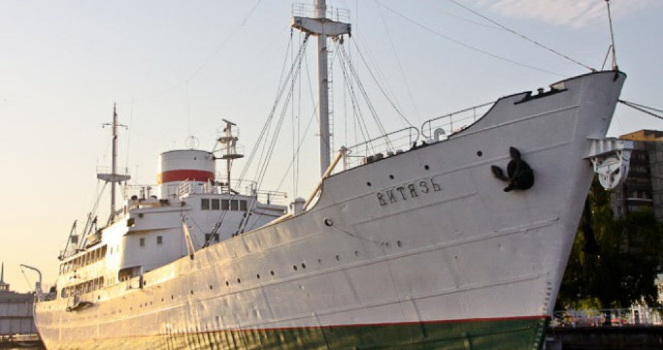

Затем эстафетную палочку перехватили русские исследователи, направившие в район Марианской впадины
научно-исследовательское судно «Витязь». В 1957 году с помощью специального оборудования они не только смогли
зафиксировать глубину впадины, равную 11022 м, но и установили наличие жизни на более чем семикилометровой глубине.
Тем самым совершив небольшой переворот в научном мире середины XX века, где бытовало устойчивое мнение, что столь
глубоко живых существ нет и быть не может. Вот здесь-то и начинается самое интересное… Множество историй о подводных
чудищах, огромных осьминогах, смятых в лепешку огромными лапами зверей невиданных батискафах…
Где правда, а где ложь – попробуем разобраться.